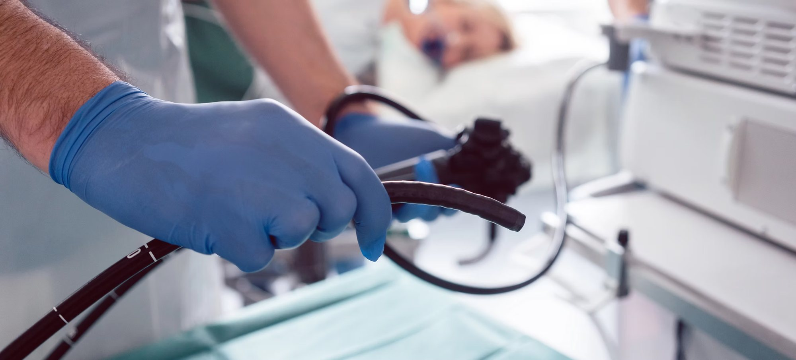

DarmspiegelungKoloskopie
Die Koloskopie ist ein medizinisches Verfahren zur Untersuchung des Dickdarms. Dabei wird ein flexibler Schlauch mit einer Kamera, das Endoskop, in den Darm eingeführt, um die Darmschleimhaut auf Polypen, Entzündungen oder andere Auffälligkeiten zu überprüfen.
Die Koloskopie ist ein wichtiges Mittel zur Früherkennung von Darmkrebs und zur Diagnose von Magen-Darm-Erkrankungen.